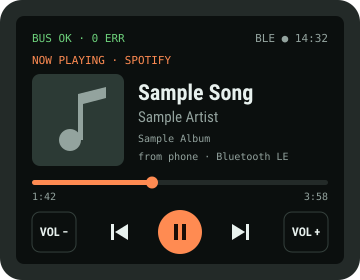

DIY E-TUBE Tap
A receive-only listener that plugs into your e-bike's E-TUBE wire, decodes what the motor, battery and display say to each other, and shows it on your own touchscreen and over Bluetooth.
* Figures reported by hobbyists who probed Di2/E-TUBE wiring. Confirm them on your own bike in Phase 3. Hobby project, not affiliated with or endorsed by Shimano. Adding third-party parts may affect your warranty.

Control Spotify on your phone from the touchscreen, or let the ESP32-S3 play internet radio, MP3s and Spotify Connect through its own speaker.
Open the add-on guide →Why this is a good learning project
You'll touch almost every layer of embedded engineering in one build: protecting a circuit from a vehicle's power bus, pulling a small high-frequency signal off a DC line, squaring it up with a comparator, timing pulses in hardware with the ESP32's RMT peripheral, working out an unknown protocol from captured data, and presenting the result on a touch UI and over Bluetooth Low Energy.
The guide is in build order. Each phase ends with a gate: a check that must pass before you continue. Tick the checkboxes as you go; your progress stays in this browser.
Chapter 02What it can and can't do
The genuine Shimano EW-EN100 does two jobs: it reports data, and it lets the official E-TUBE Project app change settings and update firmware. This build does the first job well. The second job needs Shimano's private protocol and signed firmware, so leave it to the real unit.
| Feature | Status | Why |
|---|---|---|
| Plug into the bike without cutting factory wiring | Yes | Shimano's passive EW-JC130 Y-cable and EW-JC200 couplers do the splitting. |
| Read speed, assist mode, battery, error codes | Yes, with work | The bus is undocumented. You find which bytes mean what (Chapter 09). |
| Show data on your touchscreen | Yes | LVGL graphics library on the ESP32-S3. |
| Send data to a phone over Bluetooth LE | Yes | Standard BLE services you define yourself. |
| Switch assist mode and lights from the touchscreen | Yes, with add-on | The ESP32 presses the bike's own switch buttons electronically (Chapter 12). The bus only ever sees genuine Shimano messages. |
| Send your own commands on the bus | Research only | Needs a transmitter and decoded write commands. Unknown messages can put the motor into an error state. |
| Change assist tuning profiles | Use the app | Done through E-TUBE Project with a genuine EW-EN100. |
| Work with the E-TUBE Project app / update firmware | No | Firmware comes from Shimano's servers and is most likely signed. A failed update can brick a drive unit. Use a genuine EW-EN100. |
| Raise the 25 km/h assist limit | Not covered | It's a legal limit for pedelecs in the EU and Australia. Removing it makes the bike legally a moped and affects insurance and warranty. |
Keep a genuine EW-EN100 for settings and firmware updates. Use this tap as your own read-only dashboard. Both can sit on the bus together.
Chapter 03How the E-TUBE bus works
The EW-SD50 cable has only two conductors. One is ground. The other carries a steady DC voltage (reported at roughly 7–9 V) that powers the display and other parts, and the data rides on top of that DC as a small high-frequency wave. This is power-line communication, the same idea as household powerline network adapters.
The wave is a ~1 MHz carrier using BPSK (binary phase-shift keying). The carrier never changes frequency or loudness. To send data, the transmitter flips the wave upside down (a 180° phase shift) at bit boundaries. Hobbyists report 2 carrier cycles per bit, which gives 500 kbit/s.
After a comparator turns the wave into a square wave, every normal half-cycle is a 500 ns pulse. A phase flip at a zero crossing joins two half-cycles of the same polarity, which gives one 1 µs pulse. To decode the bus you only have to find the long pulses. Try it below.
Two ways to read the flips
Absolute BPSK: a flip means "this bit differs from the last one". You recover the bits by toggling at every flip, up to an unknown first bit. Differential BPSK (DBPSK): a flip is a 1 and no flip is a 0. You won't know which scheme Shimano uses until you look at real frames. The decoder in Chapter 09 prints both.
Chapter 04System design
Your board sits on a branch of the motor-to-display cable, never in the middle of it. If your board fails or comes unplugged, the bike keeps working.
Chapter 05Bill of materials
Prices are typical Australian retail in AUD, including GST. They're estimates, so check before you order. Where to buy in Australia:
- Shimano parts: your Merida dealer, 99 Bikes, or online bike stores. Bike shops can order E-TUBE parts through Shimano's Australian distributor.
- Electronics: Core Electronics (XIAO, Pololu); Altronics or Jaycar (passives, enclosures, heat-shrink); DigiKey AU, element14 or Mouser AU (TLV3501, inductors; free shipping above about A$60).
A · Bike interface (Shimano parts)
| Part | Qty | What it does | ≈ A$ |
|---|---|---|---|
| EW-JC130 Junction B Y-cable, 350/50/250 mm | 1 | Passive 3-plug Y splitter. L2 to the motor cable, L3 to the display, L1 to your board. | 55–75 |
| EW-JC200 2-port junction | 2 | Socket-to-socket coupler that joins two plugs. #1 joins the motor cable to L2, #2 joins L1 to your pigtail. | 60–80 |
| EW-SD50 E-TUBE cable, 150 mm | 1 | Cut it about 80 mm from one plug. The plug end is your board pigtail. | 15–25 |
| TL-EW02 plug tool | 1 | Plugs and unplugs E-TUBE connectors without bending the pins. | 15–20 |
| Subtotal | 145–200 | ||
Cheaper alternative: skip JC200 #2 and the EW-SD50 by cutting leg L1 of the JC130 and soldering it straight to your board. That saves about A$45–65, but the JC130 can't be reused afterwards.
B · Electronics
| Ref | Part | Qty | Notes | ≈ A$ |
|---|---|---|---|---|
| MCU | Seeed XIAO ESP32-S3 | 1 | Or ESP32-S3-DevKitC-1 while prototyping. If your touchscreen is an all-in-one ESP32-S3 board, use that instead. | 15–20 |
| U2 | TLV3501AIDBVR comparator + SOT-23-6 adapter board | 1 | 4.5 ns, rail-to-rail input, runs on 3.3 V. LMV7219 is an alternative. | 7–10 |
| U1 | Pololu D36V6F3 3.3 V buck module | 1 | 4.2–50 V in, 600 mA out. | 12–15 |
| C1 | 1 nF, C0G/NP0, 100 V, 0805 | 2 | Blocks the DC, passes the 1 MHz data. Must be C0G for a stable value. | 1 |
| L1 | 470 µH power inductor, ≥150 mA, self-resonance > 2 MHz | 1 | Stops the buck converter from loading the data signal. Check the datasheet's self-resonant frequency (SRF). | 2–4 |
| F1 | Resettable PTC fuse, 100 mA hold (200 mA if the screen runs from the bus) | 1 | Protects the bike if your board shorts. | 1 |
| D1 | SS14 Schottky diode | 1 | Reverse-polarity protection, 0.4 V drop. | 0.50 |
| TVS1 | SMAJ15A TVS diode | 1 | Absorbs voltage spikes above 15 V. | 1 |
| D2 | BAT54S dual Schottky | 1 | Clamps the comparator input between GND and 3.3 V. | 0.50 |
| R1 | 10 kΩ | 1 | Sets how lightly you load the bus. | 5 |
| R2, R3 | 100 kΩ | 2 | Bias the signal to mid-supply (1.65 V). | |
| R4 | 1 MΩ (also get 2.2 MΩ and 470 kΩ) | 1 | Hysteresis feedback. The spares let you tune it. | |
| R5, R6 | 47 kΩ | 2 | Threshold divider around the trimmer. | |
| R7 | 100 Ω | 1 | Series resistor on the GPIO line. | |
| RV1 | 10 kΩ multi-turn trimmer | 1 | Sets the comparator threshold, about 1.49–1.81 V. | 2–3 |
| C2, C4 | 10 µF 25 V ceramic, 100 nF ceramic ×3 | 4 | Buck input capacitor and comparator decoupling. | 2 |
| C3 | 100 µF low-ESR, 6.3 V | 1 | Handles the S3's current spikes when the radio transmits. | 1 |
| JP1 | 2-pin header + jumper | 1 | Connects bus power. Left open in Stage A. | 0.50 |
| PCB | Perfboard 5×7 cm, or a small custom PCB | 1 | JLCPCB charges about A$8 for 5 boards, plus shipping to Australia. | 4–10 |
| Box | IP67 enclosure ~60×40×20 mm + PG7 cable gland | 1 | Jaycar and Altronics stock these. Or 3D-print one and pot the board. | 10–15 |
| Misc | 26 AWG silicone wire, glue-lined heat-shrink, conformal coating | — | Weatherproofing. | 20–25 |
| Subtotal (touchscreen not included, you already have it) | ≈ 85–115 | |||
C · Tools
| Tool | Why you need it | ≈ A$ |
|---|---|---|
| Oscilloscope, ≥ 20 MHz (Hantek 6022BE, FNIRSI DSO or better) | To see the 1 MHz carrier and measure its amplitude. You can't tune the comparator without it. | 110–250 |
| 24 MHz USB logic analyzer + PulseView (sigrok) | Checks the comparator output independently of your firmware. | 15–25 |
| Multimeter | Bus voltage, wire identification, current draw. | 30–50 |
| ADuM3160 USB isolator | Prevents ground loops between the bike and a mains-powered laptop. | 25–35 |
| Fine-tip soldering iron, flux, tweezers | SOT-23 and 0805 parts. | — |
Or about A$100–135 with the cut-leg alternative.
Touchscreen not included.
Scope, logic analyzer, multimeter, isolator.
D · Software (free)
ESP-IDF v5.x (RMT RX driver, NimBLE), LVGL 9 + esp_lvgl_port, Python 3 with pyserial, PulseView, and nRF Connect on your phone.
Chapter 06Circuit design
The board is two independent circuits that share only ground: a power path that feeds the ESP32 from the bus, and a signal path that listens to it. Build and test the signal path first. The power path stays disconnected (JP1 open) until Stage B.
Power path
Signal path
The numbers behind the parts
Far below the 1 MHz carrier, so the data passes. DC (0 Hz) is blocked completely.
Light enough that the motor and display won't notice the extra listener.
Isolates the buck's input capacitors from the data. A 100 µH part would give only 630 Ω, too low.
For a weak signal (< 80 mV p-p) use 2.2 MΩ (12 mV). For a noisy one, use 470 kΩ (58 mV).
RV1 sweeps about ±160 mV around the 1.65 V bias. Set it just off idle so a silent bus reads a steady level.
Without / with the touchscreen. Measure your real draw before mounting.
PCB layout
A 60 × 40 mm two-layer board. The layout follows the schematic: power runs along the top, the listening circuit sits in the bottom-left corner, and the XIAO is in the bottom-right corner. The top-layer drawing is to scale (10 px = 1 mm). Use it as the placement guide when you lay out the board in KiCad, or as a map when you build it on perfboard.
Keep C1 → U2 → D3 under 40 mm, and R7 within 5 mm of the XIAO pad. A long trace picks up noise and slows the edges RMT has to measure.
Place C4 (100 nF) within 2 mm of U2's supply pin, with its GND via right next to the pad. Fast comparators oscillate without it.
Fill both layers with GND and stitch them with a via every 5 mm. Never route the 3.3 V or bus-power traces through the signal zone.
The buck converter switches fast, so keep it at the opposite end of the board from the comparator. L1 sits between the two zones on purpose.
Power traces 0.5 mm, signal 0.25 mm, 0.2 mm clearance. Everything here is well inside JLCPCB's standard 2-layer limits.
Four M2.5 mounting holes, a strain-relief slot, conformal coating (keep it off the trimmer and USB), and no parts taller than 6 mm except the Pololu board.
Footprints and ordering
| Ref | KiCad footprint | Hand-solder tip |
|---|---|---|
| R1–R7, C1 | Resistor_SMD / Capacitor_SMD: 0805 | Tin one pad, place the part with tweezers, then solder the other side. |
| C4 | 0603 | Do it right after U2, before nearby parts get in the way. |
| C2, F1 | 1206 | Easy. |
| C3 | 1210 (100 µF ceramic) or a 6.3 mm SMD electrolytic | Check polarity if you use an electrolytic. |
| D1, TVS1 | Diode_SMD: SMA | The cathode band matches the silkscreen bar. |
| D2 | SOT-23 | Flux, then drag-solder. |
| U2 | SOT-23-6 | Pin 1 dot faces C1. Check for bridges with a magnifier. |
| L1 | Inductor_SMD 7.3 × 7.3 mm (match your part) | Use plenty of heat, since the pads are large. |
| RV1 | Potentiometer_SMD: Bourns 3314J | Solder last, and keep flux out of the wiper. |
| U1 | 3 × 2.54 mm pin header | Solder the module flat onto short pins. |
| XIAO | Seeed XIAO castellated (Seeed KiCad library) | Or fit pin headers so you can swap the XIAO. |
| J1 | 2 × 2.5 mm pads + 3 × 7 mm slot | Tin the pigtail cores first. |
From KiCad to a board: draw the schematic, assign the footprints above, place parts as in the drawing, route, add the GND pours (B.Cu and F.Cu), run the design rules check (DRC), then File → Plot Gerbers plus a drill file. At JLCPCB, choose 2 layers, 1.6 mm, lead-free HASL or ENIG, 5 pieces. That's about A$8 for the boards plus A$15–25 shipping to Australia.
Chapter 07ESP32-S3 wiring
The pin plan is for the XIAO ESP32-S3 with an SPI display and I²C touch controller, the most common touchscreen setup. Check your screen's pin names against the table and adjust. If your screen is an all-in-one ESP32-S3 board, connect the comparator to any free GPIO that isn't a strapping pin and change TAP_GPIO in the firmware.
| From | To | Stage | Note |
|---|---|---|---|
| Pigtail GND | Board GND rail → XIAO GND | A + B | Always connected. |
| Pigtail BUS+ | C1 (signal tap) | A + B | Listen only. |
| Pigtail BUS+ | F1 → D1 → JP1 → L1 → U1 | B only | JP1 stays open in Stage A. |
| U1 VOUT (3.3 V) | XIAO 3V3 pin + C3 | B only | Unplug USB before closing JP1. Never feed both at once. |
| U2 OUT | R7 → XIAO D3 / GPIO4 | A + B | Keep this wire short (< 5 cm). |
| XIAO USB-C | Laptop on battery, or via USB isolator | A | Avoids a ground loop through the bike. |
Chapter 08Build, step by step
Battery out whenever you plug or unplug E-TUBE connectors. Your board never drives the bus. Disconnect the tap before any Shimano firmware update. If the display shows an E or W error code, unplug the tap first and ask questions second.
Look for a spare port
Before buying the Y-cable, check the DU-E6100 motor and the SC-E5000 display for an unused E-TUBE port covered by a small rubber dummy plug. If you find one, your pigtail can plug straight in and you can skip the JC130 and JC200 #1. Look under the motor cover and behind the display mount.
Install the Y-cable
- Turn the system off and remove the battery.
- Use the TL-EW02 to unplug the motor cable from the display. Pull the plug straight; never pull on the wire.
- Plug the motor cable into one side of EW-JC200 #1. Plug the JC130's 50 mm leg (L2) into the other side.
- Plug the 250 mm leg (L3) into the display.
- Leave the 350 mm leg (L1) loose for now, with JC200 #2 on its end (an empty port does no harm).
- Battery in, power on. The display should work normally with no error code.
Make the pigtail and measure the bus
- Cut the 150 mm EW-SD50 about 80 mm from one plug. Strip the outer jacket 15 mm and the two cores 3 mm. Keep the bare ends apart, and cover each with a piece of heat-shrink left loose for now.
- Plug the pigtail into JC200 #2 on leg L1. Battery in, power on.
- Voltage: multimeter on DC volts, probes on the two cores. A positive reading means the red probe is on BUS+. Write down the value.
- Signal: scope ground clip on GND, probe tip through a 1 nF capacitor to BUS+, 1× probe setting, AC coupling, 0.5 µs/div. Press the assist buttons and watch for bursts. Note the peak-to-peak amplitude and how often bursts come.
- Mark BUS+ with red heat-shrink, then shrink both cores.
| Measure | Expected | Your value |
|---|---|---|
| DC bus voltage | ≈ 7–9 V | |
| Carrier frequency | ≈ 1 MHz | |
| Signal amplitude | unknown, sets R4 and RV1 | |
| Burst interval at idle | unknown |
Build the signal path and bench-test it
- Solder U2 onto its SOT-23 adapter first and check for bridges with a magnifier.
- Build the signal path from the schematic: C1, R1, D2, R2/R3, R4, RV1/R5/R6, R7, plus a 100 nF capacitor right at U2's supply pins. Tie U2's shutdown pin to the "enabled" level from its datasheet.
- Fit the power-path parts too, but leave JP1 open.
- Self-test without the bike: flash the test firmware, which outputs a 1 MHz square wave on GPIO2 through the LEDC peripheral. Feed it into C1 through a 10 kΩ + 1 kΩ divider, giving about 300 mV.
- Turn RV1 until the logic analyzer on GPIO4 shows a clean 500 ns / 500 ns square wave. Remove the test signal: GPIO4 should sit still.
Connect to the bike, powered from USB
- Battery out. Solder the pigtail to J1: BUS+ to the C1/F1 side, GND to the GND rail.
- Plug the pigtail into JC200 #2. Plug the XIAO into a laptop running on battery, or through the USB isolator.
- Battery in, power on. Check the display for errors.
- Start the capture firmware and the Python logger (Chapter 10). You should see lines starting with
Fand pulse widths near 500 and 1000 ns. - Re-tune RV1 if you see stray pulses during silent gaps. Change R4 if it still chatters.
Decode the protocol
Follow Chapter 09. This is the long, fun part. Build a table of which bits change when you change one thing on the bike.
Dashboard and Bluetooth
Move your decoder tables into firmware, draw the LVGL screen (Chapter 11), and add the BLE service. Test everything with the bike on a stand.
Power the board from the bike
- Battery out, USB unplugged. Close JP1.
- Put the multimeter (mA range) in series with BUS+ for the first power-up.
- Battery in, power on. Check: display has no errors, current ≈ 17 mA without the screen (≈ 46 mA with it), the S3 boots.
- Check the scope again: the carrier amplitude should be the same as in Phase 3. If it dropped, L1's impedance is too low, so use a bigger choke.
Weatherproof and mount
- Conformal-coat the board (not the USB port or trimmer). Fit it into the IP67 box with the pigtail through the PG7 gland.
- Mount the box near the junction: on the head tube cables or inside a frame cover, away from the motor (heat) and brake rotor.
- Leave a strain-relief loop so a pull unplugs the pigtail from JC200 #2 rather than breaking a solder joint.
- Mount the touchscreen on the bars with a waterproof cover. Dim the backlight or have it switch off when idle.
- Short test ride, then check for error codes and for any chafing points.
Chapter 09Decoding the protocol
The ESP32 sends raw pulse widths to your laptop. The laptop turns them into bits and compares frames. Doing the analysis in Python keeps the firmware simple, and you can re-decode old captures as your understanding improves.
Method: change one thing, see what changes
- Baseline. Bike on, nothing touched, for 30 s. Frames that repeat are polling or heartbeats. Note how often each kind appears.
- Group by length and start. Frames that begin with the same bits and have the same length are probably the same message type from the same sender.
- Change one variable, then look at which bit positions change in that message type.
- Look for checksums. The last 8 or 16 bits changing whenever anything changes is a CRC. Try CRC-8 and CRC-16 variants with a tool like
reveng.
| Experiment | Do this | Look for |
|---|---|---|
| Assist mode | Step OFF → ECO → NORMAL → HIGH → back | A small field (2–3 bits) stepping through 4 values. |
| Walk mode | Hold walk assist for 5 s | One flag bit, or a separate message type. |
| Wheel speed | Bike on stand, assist OFF, spin the rear wheel by hand at a steady rate | A field that rises with speed, or a pulse-period field that falls. |
| Lights | Toggle lights (if connected to the motor) | One flag bit. |
| Battery | Capture before and after a ride | A byte that falls slowly. Compare with the % on the display. |
| Errors | Compare with a known error code if one ever appears | Note it, but don't create faults on purpose. |
Laptop decoder
This turns the logger's pulse widths into bits. Each width is rounded to whole 500 ns half-cycles, so timing errors can't build up across a long frame. In a test with ±150 ns of random jitter on every pulse, it decoded 20,000 out of 20,000 simulated frames correctly.
#!/usr/bin/env python3
"""etube_decode.py: read 'F n w0 w1 ...' lines from the ESP32 and print bits.
Usage: python3 etube_decode.py /dev/cu.usbmodem1101 [label]"""
import sys, collections, serial
HALF_NS = 500 # one carrier half-cycle (1 MHz carrier)
def decode(widths_ns):
# Returns (bpsk_bits, dbpsk_bits). Time is counted in whole half-cycles.
units, flips = 0, set()
for w in widths_ns:
n = round(w / HALF_NS)
if n == 2: # 1 us pulse = phase flip at its centre
flips.add((units + 1) // 4) # 4 half-cycles per bit
units += n
nbits = units // 4
bpsk, cur = [], 1 # first bit is unknown; assume 1
for k in range(nbits):
if k in flips:
cur ^= 1
bpsk.append(cur)
dbpsk = [1 if k in flips else 0 for k in range(nbits)]
return bpsk, dbpsk
def main():
port = serial.Serial(sys.argv[1], 115200, timeout=1)
label = sys.argv[2] if len(sys.argv) > 2 else "capture"
seen = collections.Counter()
with open(f"{label}.log", "a") as log:
for raw in port:
parts = raw.decode(errors="ignore").split()
if len(parts) < 3 or parts[0] != "F":
continue
widths = [int(x) for x in parts[2:] if x != "0"]
bpsk, dbpsk = decode(widths)
a = "".join(map(str, bpsk))
b = "".join(map(str, dbpsk))
seen[a] += 1
line = f"{len(bpsk):4d} BPSK {a}\n DBPSK {b}"
print(line + ("" if seen[a] > 1 else " <-- new"))
log.write(f"{label}\t{a}\t{b}\n")
if __name__ == "__main__":
main()Run it once per experiment with a label (baseline, eco, high, …), then compare the logs side by side. Messages marked <-- new are the first time a bit pattern was seen, which helps a lot when you press a button.
Chapter 10Firmware
Capture + logger (ESP-IDF v5)
This is the whole Stage A firmware: it receives frames on GPIO4 and prints pulse widths in nanoseconds. While a line is printing, the next frame can be missed. That's fine for exploration; once you need every frame, use a double buffer.
// main/tap_main.c: E-TUBE tap, Stage A capture firmware
#include <stdio.h>
#include "freertos/FreeRTOS.h"
#include "freertos/queue.h"
#include "driver/rmt_rx.h"
#include "driver/ledc.h"
#include "esp_err.h"
#define TAP_GPIO 4 // XIAO D3, comparator output
#define TEST_GPIO 2 // XIAO D1, 1 MHz self-test output (Phase 4 only)
#define RMT_RES_HZ 80000000 // 12.5 ns per tick
#define RX_SYMBOLS 2048
static rmt_channel_handle_t rx_chan;
static rmt_symbol_word_t rx_buf[RX_SYMBOLS];
static QueueHandle_t rx_queue;
static const rmt_receive_config_t rx_cfg = {
.signal_range_min_ns = 100, // drop glitches shorter than 100 ns
.signal_range_max_ns = 20000, // 20 us without an edge ends the frame
};
static bool IRAM_ATTR on_rx_done(rmt_channel_handle_t ch,
const rmt_rx_done_event_data_t *ev, void *ctx)
{
BaseType_t woken = pdFALSE;
xQueueSendFromISR(rx_queue, ev, &woken);
return woken == pdTRUE;
}
static void tap_init(void)
{
rmt_rx_channel_config_t cfg = {
.gpio_num = TAP_GPIO,
.clk_src = RMT_CLK_SRC_DEFAULT,
.resolution_hz = RMT_RES_HZ,
.mem_block_symbols = RX_SYMBOLS,
.flags.with_dma = true, // ESP32-S3 supports DMA on RMT RX
};
ESP_ERROR_CHECK(rmt_new_rx_channel(&cfg, &rx_chan));
rx_queue = xQueueCreate(4, sizeof(rmt_rx_done_event_data_t));
rmt_rx_event_callbacks_t cbs = { .on_recv_done = on_rx_done };
ESP_ERROR_CHECK(rmt_rx_register_event_callbacks(rx_chan, &cbs, NULL));
ESP_ERROR_CHECK(rmt_enable(rx_chan));
}
// Phase 4 self-test: 1 MHz, 50 % square wave on TEST_GPIO
static void test_signal_start(void)
{
ledc_timer_config_t t = {
.speed_mode = LEDC_LOW_SPEED_MODE, .timer_num = LEDC_TIMER_0,
.duty_resolution = LEDC_TIMER_4_BIT, .freq_hz = 1000000,
.clk_cfg = LEDC_AUTO_CLK,
};
ESP_ERROR_CHECK(ledc_timer_config(&t));
ledc_channel_config_t c = {
.gpio_num = TEST_GPIO, .speed_mode = LEDC_LOW_SPEED_MODE,
.channel = LEDC_CHANNEL_0, .timer_sel = LEDC_TIMER_0, .duty = 8,
};
ESP_ERROR_CHECK(ledc_channel_config(&c));
}
static void tap_task(void *arg)
{
rmt_rx_done_event_data_t ev;
for (;;) {
ESP_ERROR_CHECK(rmt_receive(rx_chan, rx_buf, sizeof(rx_buf), &rx_cfg));
xQueueReceive(rx_queue, &ev, portMAX_DELAY);
printf("F %u", (unsigned)ev.num_symbols);
for (size_t i = 0; i < ev.num_symbols; i++) {
const rmt_symbol_word_t *s = &ev.received_symbols[i];
// ticks * 12.5 ns; the last symbol's duration1 may be 0
printf(" %u %u", s->duration0 * 25 / 2, s->duration1 * 25 / 2);
}
printf("\n");
}
}
void app_main(void)
{
tap_init();
#ifdef CONFIG_TAP_SELFTEST
test_signal_start();
#endif
xTaskCreatePinnedToCore(tap_task, "tap", 4096, NULL, 10, NULL, 1);
}idf.py create-project etube_tap, idf.py set-target esp32s3, then in menuconfig set the console to USB Serial/JTAG. Add a TAP_SELFTEST bool option in Kconfig.projbuild for Phase 4, or simply call test_signal_start() while bench-testing.
Bluetooth LE layout
| Service | UUID | Characteristic | Data |
|---|---|---|---|
| Battery Service | 0x180F | Battery Level 0x2A19 | uint8 %, notify. Phones and bike computers understand it automatically. |
| Device Information | 0x180A | Model, firmware rev | Strings, read. |
| E-TUBE Tap (custom) | generate a random 128-bit UUID | Status | Packed struct, notify: speed ×10 (uint16), assist mode (uint8), battery (uint8), error code (uint16). |
| Raw frame | Last decoded frame bytes, notify. Useful for wireless capture once the board is sealed in its box. |
Chapter 11Touchscreen dashboard
Example layout, sample values. A 320×240 screen in landscape. On its own, the tap only shows the mode. Add the button add-on from Chapter 12 and tapping ECO, NORMAL or HIGH presses the bike's switch for you.
- Use
esp_lvgl_portwith your display driver (ST7789, ILI9341 or GC9A01) and touch driver (CST816 or FT6236). - Update the screen at most 10 times a second from the decoder's state, never from inside the capture task.
- Swipe screens: trip stats, a raw-frame viewer (handy while decoding), and a settings page for brightness and units.
- Large, high-contrast numbers stay readable in sunlight. Turn the backlight off after 60 s with the bike stopped.
The Ride Audio add-on adds a mini player to this screen, plus Now playing, Radio and MP3 screens.
Chapter 12Controlling assist and lights
To make the touchscreen change things, something has to tell the motor. There are three places the ESP32 could do that from, and they carry very different risks. The diagram shows where each one attaches.
| Option | Read numbers | Change assist | Lights | Risk to the bike | Difficulty |
|---|---|---|---|---|---|
| A · Button add-on + bus tap | Tap | Yes | Yes* | Low. The switch is opened and must be resealed. | Moderate, a weekend |
| B · Bus transmitter | Tap | In theory | In theory | High: error codes, unknown motor reaction | Months of research |
| C · Display chip tap | Depends on chips | Via its buttons (= A) | Via its buttons (= A) | Medium–high: display opened, waterproofing lost | Hard |
| D · Shimano minimal setup: EW-EN100 + switch, no SC display | Tap | Switch, or A | Depends on layout | Low, official parts | Easy. Check compatibility first. |
* Lights work with option A if the light toggle is a button you can reach, on the switch or on the display. Wire that button the same way.
Can my touchscreen fully replace the display?
As the thing you look at: yes. As the thing that runs the bike: not by itself. On STEPS, the display (or an EW-EN100) is the system's user-interface unit. The motor expects a recognised Shimano unit in that role, and an unknown device won't be accepted.
A clean way to free up the handlebar is option D. Shimano lists display-less layouts for its STEPS motors, where an EW-EN100 plus an assist switch takes the display's place. If your E6100 supports that layout, remove the SC-E5000, fit the EW-EN100 (which also gives you the E-TUBE Project app), and your touchscreen becomes the only screen. Confirm with your Merida dealer or Shimano's compatibility chart for your exact motor and firmware first, and check which button toggles the lights in that layout.
Can I take the signals from the display's chips instead of the motor wire?
Possibly. It depends on which chips are on the display's circuit board. The display only knows what reaches it over the same E-TUBE wire, so the data is the same either way. What can differ is its form: inside the display, the job of turning the 1 MHz wave into bits may already be done by a chip, leaving clean digital signals you can read with a logic analyzer.
| Tap point | What you'd get | Exists if | Difficulty |
|---|---|---|---|
| 1 · modem → main chip | Already-demodulated bits, probably UART or SPI. No comparator and no BPSK decoding: PulseView can decode it directly. | The bus interface is a separate chip | Easiest to decode, if it exists |
| 2 · main chip → LCD driver | Exactly what's on screen (speed digits, battery bars) as writes to the driver's segment memory. | The display uses a separate LCD driver chip (HT1621-style) | Moderate: map memory bits to segments |
| 3 · buttons | Button presses, and a place to "press" them (Chapter 12 method) | Always | Easy |
A warning from others' teardowns: one hobbyist who decapped a Shimano chip reported a custom Renesas-based design with the bus logic built in (unverified, from the EEVblog thread). If the SC-E5000 works the same way, tap point 1 doesn't exist. Only opening yours will tell you.
How to find out
- Battery out. Open the display carefully, noting every seal and clip. Photograph both sides of the board in sharp focus.
- Read the chip markings and look up their datasheets. Look for the main chip, any small chip near the E-TUBE connector (a modem or line driver), and any chip with many traces running to the LCD (an LCD driver).
- Measure the logic voltage on the chips' supply pins. The ESP32-S3 accepts 3.3 V only, so a 5 V board needs a level shifter or resistor divider first.
- Bike on, logic analyzer on the lines between chips. A line that bursts at the same moments the scope shows bursts on the E-TUBE wire is the digital link. Try PulseView's UART and SPI decoders on it.
- Connect the S3 as a listener only: input pin through a 1 kΩ series resistor, with a shared ground. Never drive these lines.
Trade-offs: you lose the display's warranty and factory waterproof seal, and thin wires have to leave the housing and be resealed. If the display fails, you lose the bike's controls. The gain, if tap point 1 exists, is that you skip the analog front end and BPSK decoding completely.
Send me photos of both sides of the board, or the chip markings, and I'll tell you which tap points your display actually has.
Option A: the button add-on
Inside the assist switch, each button is a small tactile switch on a circuit board. A PhotoMOS relay is a tiny solid-state switch controlled by an internal LED. Solder its output across a tactile switch, and when the ESP32 lights the LED, the relay closes that switch exactly like a finger press. The relay's two sides are electrically isolated, and its output works in either direction, so you don't need to know which pad is which.
- Battery out. Open the assist switch (normally the left-hand bar unit). Note every screw and the gasket, and photograph the circuit board.
- Find the pads. Each tactile switch has 4 legs in 2 connected pairs. With the multimeter on continuity, find the pair that only beeps while the button is held down.
- Prove it. Battery in. Briefly bridge those two pads with insulated tweezers: the assist mode should change. Battery out again.
- Solder 30 AWG Kynar wire to each pad pair. Many switch boards share one common pad, which gets you down to 4 wires for 3 buttons. Hot-glue the wires near the joints for strain relief.
- Route and seal. Take the wires out through a small hole in the housing and seal it with neutral-cure silicone (acid-cure types corrode copper). Refit the gasket.
- Connect to the relay outputs on your board through a small locking connector (JST-PH), so the switch can be disconnected.
- Close the loop in firmware: press for 150 ms, then watch the bus tap. If the decoded assist mode didn't change within 300 ms, show a warning instead of pressing again and again.
Don't map walk assist to the touchscreen, because it drives the motor with no pedalling. Never let firmware press buttons on its own while riding. The MCP23008 starts up with every output off, so a reboot can't leave a button "held".
// main/buttons.c: press the switch's buttons through MCP23008 + PhotoMOS
#include "driver/i2c_master.h"
#include "freertos/FreeRTOS.h"
#include "freertos/task.h"
#define MCP23008_ADDR 0x20
#define REG_IODIR 0x00
#define REG_OLAT 0x0A
enum { BTN_UP = 0, BTN_DOWN = 1, BTN_LIGHT = 2 };
static i2c_master_dev_handle_t mcp;
static void mcp_write(uint8_t reg, uint8_t val)
{
uint8_t buf[2] = { reg, val };
ESP_ERROR_CHECK(i2c_master_transmit(mcp, buf, sizeof(buf), 50));
}
// bus: the I2C bus handle your touch driver already created
void buttons_init(i2c_master_bus_handle_t bus)
{
i2c_device_config_t dev = {
.dev_addr_length = I2C_ADDR_BIT_LEN_7,
.device_address = MCP23008_ADDR,
.scl_speed_hz = 400000,
};
ESP_ERROR_CHECK(i2c_master_bus_add_device(bus, &dev, &mcp));
mcp_write(REG_OLAT, 0x00); // all relays open before enabling outputs
mcp_write(REG_IODIR, 0xF8); // GP0..GP2 outputs, rest inputs
}
// 150 ms = short press. Use about 1500 ms only where Shimano's manual
// says a long press is needed (lights on some layouts). Never walk mode.
void button_press(int btn, int ms)
{
mcp_write(REG_OLAT, (uint8_t)(1u << btn));
vTaskDelay(pdMS_TO_TICKS(ms));
mcp_write(REG_OLAT, 0x00);
}Add-on parts (AUD)
| Ref | Part | Qty | Notes | ≈ A$ |
|---|---|---|---|---|
| U3 | MCP23008-E/P I²C 8-bit GPIO expander (DIP-18) | 1 | Shares the touch controller's I²C pins. | 3–4 |
| K1–K3 | AQY212EH PhotoMOS relay (or Toshiba TLP222A) | 3 | 60 V, 500 mA, isolated, polarity-free output. | 9–15 |
| R8–R10 | 470 Ω resistor | 3 | About 4 mA LED current from 3.3 V. | 1 |
| — | 30 AWG Kynar wire-wrap wire | 1 roll | Fine enough for switch pads. | 8 |
| J3 | JST-PH 4-pin connector pair | 1 | Lets you disconnect the switch. | 3 |
| — | Neutral-cure silicone sealant | 1 | For resealing the switch housing. | 10–12 |
| Add-on subtotal | ≈ 34–43 | |||
Chapter 133D-printed case
A handlebar head unit that holds the touchscreen and the tap board together. It's a single parametric OpenSCAD file, etube_case.scad, that produces four printable parts: bezel, shell, mount and gasket. All the dimensions below are the file's defaults, sized for a typical 2.8-inch SPI touchscreen module. Measure your own screen first and change the numbers at the top of the file. Everything else resizes automatically.
With this case, the tap board lives on the handlebar instead of in a separate box near the head tube. The pigtail comes in through the cable gland and plugs into JC200 #2 on the Y-cable's 350 mm leg, which sits near the display.
Measure your screen first
| Parameter | What to measure (calipers) | Default |
|---|---|---|
scr_pcb | Module circuit board, width × height | 86 × 50 mm |
scr_pcb_t | Board thickness | 1.6 mm |
scr_glass_t | Glass and backlight, from the board's front surface to the glass face | 4.0 mm |
view | Lit area of the screen, minus 1 mm on every side | 58 × 44 mm |
view_off | How far the lit area's centre is from the board's centre, seen from the front | 0, 0 |
scr_rear | Tallest thing on the back of the screen board (usually the pin header) | 11 mm |
press_pts | 4 spots on the back of the screen board with no parts, where posts can press | ±39.5, ±21.5 |
bar_d | Handlebar diameter where the unit will sit | 31.8 mm |
Drawings
Print settings
| Setting | Value | Why |
|---|---|---|
| Material | PETG, or ASA for full sun | PLA starts softening around 60 °C. A dark case in an Australian summer gets hotter than that. |
| Layer height | 0.2 mm | Good balance of strength and print time. |
| Walls | 4 perimeters | Solid material around the heat-set inserts and screw holes. |
| Top / bottom | 5 layers | Watertight faces. |
| Infill | 25–30 % gyroid | Stiff in every direction. |
| Supports | None | Designed to print flat. |
| Adhesion | Brim for ASA | ASA corners tend to lift. |
| Gasket | TPU 95A, 100 % infill, slow (20 mm/s) | Soft enough to seal when the screws are tightened. |
Case hardware (AUD)
| Part | Qty | Notes | ≈ A$ |
|---|---|---|---|
| M3 heat-set inserts (≈ 5 mm long, for a 4.0 mm hole) | 6 | 4 in the bezel, 2 for the mount. Check the hole size against the insert's datasheet and set insert_d to match. | 8–12 (pack) |
| M3 × 30 socket-head screws, stainless | 4 | Case screws, fitted from the back. | 4 |
| M3 × 10 socket-head screws, stainless | 2 | Mount to case. | 2 |
| M2.5 × 6 self-tapping screws | 4 | Hold the tap board on its standoffs. | 3 |
| PG7 cable gland, IP68 | 1 | For the pigtail. Jaycar or Altronics. | 3–5 |
| 1 mm clear polycarbonate sheet | 1 | Cut to 68 × 54 mm. Acrylic tends to crack when cut, so polycarbonate is better. | 8–12 |
| Thin clear double-sided tape (3M VHB 0.25 mm) | 1 | Seals the window sheet to the bezel. | 10 |
| 1.5 mm EVA foam pads | 4 | On top of the press posts. | 5 |
| Rubber shim, 1 mm (an old inner tube works) | 1 | Grip on the bar, protects the paint. | 0 |
| Rubber mounting straps or 12 mm hook-and-loop | 2 | Through the strap slots and around the bar. | 8 |
| USB-C silicone dust plug | 1 | Seals the USB port while riding. | 3 |
| Subtotal, plus about 150 g of PETG and 15 g of TPU | ≈ 54–64 | ||
Assembly
- Inserts: with a soldering iron at about 230 °C, press the 4 inserts into the bezel bosses (from the back face) and the 2 inserts into the shell's mount bosses (from the inside). Let them cool before handling.
- Window: put a frame of VHB tape around the inside pocket, press the polycarbonate sheet in, and hold it for 30 s.
- Screen: lay the touchscreen module glass-down onto the sheet, centred on the window. Stick a foam pad on each press post.
- Tap board: screw it onto the 4 standoffs. Fit the PG7 gland in the left wall, feed the pigtail through it, and solder the pigtail to J1. Connect the screen wires to the XIAO.
- Close: lay the TPU gasket on the shell rim, bring the bezel down, and tighten the 4 M3 × 30 screws a little at a time in a cross pattern until the gasket is evenly squeezed.
- Mount: screw the mount onto the back (2 × M3 × 10), wrap the shim around the bar, and strap the unit on. Plug the USB-C port.
The default is 45 mm thick because the Pololu module stands on pins (tap_parts = 13). Solder the Pololu flat, or use a low-profile buck module, and set tap_parts to 7 to save 6 mm. Trimming the screen's pin header and lowering scr_rear saves more. The file prints the new size in OpenSCAD's console when you render.
The OpenSCAD file
Install OpenSCAD 2021.01 or newer. Set PART to each part name in turn, press F6 to render, and export each one as an STL for your slicer.
// etube_case.scad: parametric 3D-printed head unit for the ESP32-S3 touchscreen
// and the 60 x 40 mm E-TUBE tap board from the build guide.
//
// 1. Measure your touchscreen module with calipers and edit [Touchscreen module].
// 2. Set PART, press F6 (Render), then File > Export > Export as STL.
// PART = "bezel" | "shell" | "mount" | "gasket" | "assembly"
// Print bezel, shell and mount in PETG or ASA (not PLA: it softens in summer sun).
// Print the gasket in TPU 95A.
PART = "assembly";
/* [Touchscreen module: measure yours] */
scr_pcb = [86.0, 50.0]; // module PCB outline, width x height
scr_pcb_t = 1.6; // PCB thickness
scr_glass_t = 4.0; // glass + backlight stack on the front of the PCB
view = [58.0, 44.0]; // window opening: about 1 mm inside the active area on each side
view_off = [0.0, 0.0]; // window centre minus PCB centre, as seen from the front
scr_rear = 11.0; // height of headers and parts on the back of the screen PCB
press_pts = [[-39.5, -21.5], [39.5, -21.5], [-39.5, 21.5], [39.5, 21.5]]; // where posts press the screen PCB (avoid parts)
/* [Tap board (PCB chapter)] */
tap_pcb = [60.0, 40.0];
tap_t = 1.6;
tap_holes = [[2, 2], [58, 2], [2, 38], [58, 38]]; // from the PCB's bottom-left corner
tap_stand = 5.0; // standoff height under the tap board
tap_parts = 13.0; // tallest part on the tap board (Pololu module on pins)
usb_x = 50.2; // USB-C centre from the tap PCB's left edge, on its bottom edge
usb_z = 2.8; // USB-C centre above the tap PCB's top surface
/* [Case] */
wall = 3.0; // side walls, also the gasket flange
front = 2.4; // front plate
floor_t = 2.4; // back plate
clr = 0.4; // clearance around each PCB
margin = 6.0; // side room so the corner bosses clear the screen PCB corners
r_out = 5.0; // outer corner radius
boss_d = 8.0;
screw_d = 3.4; // M3 clearance hole
head_d = 6.4; // M3 socket-head counterbore
screw_len = 30; // length of the four M3 case screws
insert_d = 4.0; // hole for M3 heat-set inserts (check your inserts' datasheet)
insert_l = 5.5;
foam = 1.5; // foam pad between the press posts and the screen PCB
gasket_t = 1.0; // TPU gasket thickness
gland_d = 12.6; // PG7 cable gland thread
cover_t = 1.0; // clear polycarbonate window, set 0 for none
cover_pad = 5.0; // window sheet extends this far past the opening on each side
/* [Handlebar mount] */
bar_d = 31.8; // handlebar diameter at the clamp spot
shim = 1.0; // rubber shim thickness
strap = [14.0, 3.5]; // strap slot width x thickness
mount_y = 20.0; // mount centre on the case back (+y = top of the screen)
$fn = 64;
// ---------- derived ----------
inner = [scr_pcb.x + 2*clr + 2*margin, scr_pcb.y + 2*clr + 2*margin];
outer = inner + [2*wall, 2*wall];
bezel_h = front + scr_glass_t + scr_pcb_t + 1.0;
depth = tap_stand + tap_t + tap_parts + 2.0 + scr_rear; // inside the shell
shell_h = floor_t + depth;
boss_c = wall + boss_d/2 - 1; // boss centre from the outer edge
corners = [for (sx = [-1, 1], sy = [-1, 1])
[sx*(outer.x/2 - boss_c), sy*(outer.y/2 - boss_c)]];
tap_org = [-tap_pcb.x/2, -inner.y/2 + 1.0]; // tap PCB bottom-left corner
mount_bosses = [[0, mount_y - 6], [0, mount_y + 6]];
cb_depth = max(2, shell_h + gasket_t + insert_l - 1.0 - screw_len);
echo(str("Outer size ", outer.x, " x ", outer.y, " mm, total thickness ",
shell_h + gasket_t + bezel_h, " mm, counterbore depth ", cb_depth, " mm"));
module rrect(size, r) { offset(r) square([size.x - 2*r, size.y - 2*r], center = true); }
module rbox(size, h, r) { linear_extrude(h) rrect(size, r); }
// Printed front face down. Local z = 0 is the face the rider sees.
module bezel() {
difference() {
union() {
difference() {
rbox(outer, bezel_h, r_out);
translate([0, 0, front]) rbox(inner, bezel_h, r_out - wall);
}
for (p = corners) translate(p) cylinder(d = boss_d, h = bezel_h);
}
// window, chamfered 45 degrees towards the rider
translate([view_off.x, view_off.y, 0])
hull() {
translate([0, 0, front - cover_t - 0.01]) linear_extrude(0.02) square(view, center = true);
translate([0, 0, -0.01]) linear_extrude(0.02)
square(view + 2*[front - cover_t, front - cover_t], center = true);
}
// pocket for the clear window sheet, open to the inside (prints without supports)
if (cover_t > 0)
translate([view_off.x, view_off.y, front - cover_t])
linear_extrude(cover_t + 0.01) rrect(view + 2*[cover_pad, cover_pad], 2);
// M3 heat-set inserts, pressed in from the back face
for (p = corners) translate([p.x, p.y, bezel_h - insert_l]) cylinder(d = insert_d, h = insert_l + 0.01);
}
}
// Printed floor down. Local z = 0 is the back of the case.
module shell() {
tap_z = floor_t + tap_stand; // underside of the tap PCB
difference() {
union() {
difference() {
rbox(outer, shell_h, r_out);
translate([0, 0, floor_t]) rbox(inner, shell_h, r_out - wall);
}
for (p = corners) translate(p) cylinder(d = boss_d, h = shell_h);
for (h = tap_holes) translate([tap_org.x + h.x, tap_org.y + h.y, 0]) cylinder(d = 5.5, h = tap_z);
// posts press the screen PCB (through a foam pad) into the bezel
for (p = press_pts) translate(p) cylinder(d = 6, h = shell_h + gasket_t + 1.0 - foam);
for (p = mount_bosses) translate(p) cylinder(d = 7, h = floor_t + 6);
}
// M3 screws from the back into the bezel's inserts
for (p = corners) translate([p.x, p.y, -0.01]) {
cylinder(d = screw_d, h = shell_h + 1);
cylinder(d = head_d, h = cb_depth);
}
// pilot holes for M2.5 self-tapping screws
for (h = tap_holes) translate([tap_org.x + h.x, tap_org.y + h.y, floor_t]) cylinder(d = 2.2, h = tap_z);
// heat-set inserts for the mount, pressed in from the inside
for (p = mount_bosses) translate([p.x, p.y, -0.01]) cylinder(d = insert_d, h = floor_t + 6.1);
// USB-C access in the bottom wall
translate([tap_org.x + usb_x, -outer.y/2 - 0.01, tap_z + tap_t + usb_z])
rotate([-90, 0, 0]) linear_extrude(wall + 0.02) rrect([12, 7], 2.5);
// PG7 cable gland in the left wall (seen from the front)
translate([-outer.x/2 - 0.01, 0, floor_t + depth/2])
rotate([0, 90, 0]) cylinder(d = gland_d, h = wall + 0.02);
}
}
// Printed plate down. Local z = 0 is the face against the case back. The bar runs along x.
module mount() {
mw = 44; ml = 26; mt = 4; blk = 11;
r = bar_d/2 + shim;
difference() {
union() {
rbox([mw, ml], mt, 3);
translate([0, 0, mt - 0.01]) linear_extrude(blk) square([mw - 6, ml], center = true);
}
translate([0, 0, mt + blk + r - 4]) rotate([0, 90, 0]) cylinder(r = r, h = mw + 2, center = true);
for (sx = [-1, 1]) translate([sx*11, 0, mt + 2 + strap.y/2]) cube([strap.x, ml + 2, strap.y], center = true);
for (sy = [-1, 1]) translate([0, sy*6, -0.01]) {
cylinder(d = screw_d, h = mt + blk + 1);
translate([0, 0, mt]) cylinder(d = head_d, h = blk + 1);
}
}
}
module gasket() {
linear_extrude(gasket_t) difference() {
union() {
difference() { rrect(outer, r_out); rrect(inner, r_out - wall); }
for (p = corners) translate(p) circle(d = boss_d);
}
for (p = corners) translate(p) circle(d = screw_d);
}
}
module assembly(explode = 14) {
color("#2b3a35") shell();
color("#d9b45a", 0.7) translate([0, 0, shell_h + explode*0.5]) gasket();
color("#3a4a44") translate([0, 0, shell_h + gasket_t + explode + bezel_h]) mirror([0, 0, 1]) bezel();
color("#55625d") translate([0, mount_y, -explode]) mirror([0, 0, 1]) mount();
}
if (PART == "bezel") bezel();
if (PART == "shell") shell();
if (PART == "mount") mount();
if (PART == "gasket") gasket();
if (PART == "assembly") assembly();Chapter 14Troubleshooting
| Symptom | Likely cause | Fix |
|---|---|---|
| E or W code on the display after connecting | Tap loading the bus, or a bad plug | Unplug the tap and power-cycle. Check plugs are fully seated. Increase R1 to 22 kΩ. |
| No pulses at all on GPIO4 | Threshold outside the signal swing | Turn RV1 slowly through its range with the scope on node A and the logic analyzer on GPIO4. |
| Pulses during silent gaps | Threshold too close to idle, or noise | Move RV1 a little further from 1.65 V. Change R4 to 470 kΩ for more hysteresis. |
| Pulse widths spread widely (300–1300 ns) | Slow edges or a weak signal | Shorten the wire from U2 to GPIO4. Check the 100 nF at U2. Use 2.2 MΩ for R4. |
| Signal smaller in Stage B than Stage A | L1 impedance too low at 1 MHz | Use 1 mH, or add a second 470 µH in series. Check its SRF is above 2 MHz. |
| S3 resets when BLE starts | Supply dips during radio transmit | Fit C3 (100 µF) right at the 3V3 pin. Check the polyfuse isn't tripping. |
| Decoded frames differ each time for the same state | Missed edges, or a counter or CRC field | Look at which bits change. A field that counts up steadily is a sequence number, not an error. |
| Hum or noise only with the laptop on its charger | Ground loop | Run the laptop on battery, or use the ADuM3160 isolator. |
Chapter 15Glossary
- E-TUBE
- Shimano's wired system for Di2 shifting and STEPS e-bikes. Two wires carry both power and data.
- EW-SD50
- The E-TUBE cable with the small round plugs used on your bike. The newer EW-SD300 has different plugs and doesn't fit.
- Junction A / B
- Shimano's names for junction units. A has a button and LED (active). B is a passive split or join.
- Carrier
- The steady 1 MHz wave the data rides on.
- BPSK
- Binary phase-shift keying: data is sent by flipping the carrier upside down (180°).
- DBPSK
- Differential BPSK: a flip means 1 and no flip means 0, so you don't need to know the starting phase.
- AC coupling
- Passing a signal through a capacitor so changes get through but steady DC doesn't.
- Bias
- A steady voltage (here 1.65 V) that the AC signal is centred on so it fits inside 0–3.3 V.
- Comparator
- A chip that outputs high when + is above −, and low otherwise. It turns a wave into clean digital edges.
- Hysteresis
- A small gap between the switch-on and switch-off thresholds, so noise near the threshold can't make the output flicker.
- Choke
- An inductor that passes DC but resists fast changes, used here to keep the power supply from absorbing the data.
- TVS diode
- Transient-voltage suppressor. Conducts hard above its rated voltage to absorb spikes.
- PTC fuse
- A fuse that heats up and cuts current on overload, then resets when it cools.
- RMT
- The ESP32's "remote control" peripheral, which measures pulse lengths in hardware with 12.5 ns resolution.
- DMA
- Direct memory access: hardware copies data into RAM without the CPU's involvement.
- Strapping pin
- A GPIO whose level at power-up sets how the chip boots. Don't connect anything that drives it.
- GATT
- How Bluetooth LE organises data into services and characteristics that a phone can read or subscribe to.
- LVGL
- An open-source graphics library for small screens, with buttons, labels, charts and touch input.
- CRC
- A checksum at the end of a frame that lets the receiver detect corrupted data.
Chapter 16Sources
- EEVblog forum: Shimano Di2 modulation. Two-wire bus, BPSK, ~1 MHz carrier, ~500 kbit/s.
- Hackaday: reverse engineering Shimano bike electronics (kwakeham's Di2 wireless work).
- PyPI: ngorke. E-Tube related tools.
- Shimano: EW-EN100. Supported motors E5000/E6100/E7000/E8000.
- bike-components: EW-JC200. 2-port EW-SD50 junction.
- Rose: EW-JC304. EW-SD300 plugs, not compatible with this bike's cables.
- 99 Bikes: Merida eSpresso 400 S EQ. E6100 drive, SC-E5000 display, 504 Wh battery.